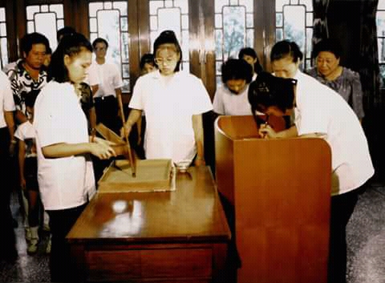

仙佛佛像介绍 Information of the Fo Xiang
德慧道場網站
佛堂聖歌 Fo Tang's Song
副營主任(俞講師大成)的週信
佛堂重要信息FoTang Information
仙佛佛像介绍Information of the Fo Xiang
仙佛佛號簡介Xian Fo Information
仙佛慈訓Xian Fo language
經文讀誦
講師授課YouTube主頁
悟見學道網
經典書籍和Youtube視頻
If you are reading this, it is because your browser does not support the audio element.
無極老母
明明上帝
彌勒祖師
南海古佛(觀世音菩薩)
活佛師尊(濟公活佛)
月慧菩薩
關法律主-關聖帝君
張法律主-張三爺
呂法律主-浮佑帝君-呂仙公
岳法律主-岳武穆王
灶君
師尊
師母
鎮殿元帥
鎮殿將軍
教化菩薩
各位大仙
金公祖師
天然古佛
中華聖母
白水聖帝
德慧菩薩
南極仙翁
五教聖人
其他照片內容

以前老母臨壇需要三位竅手來批訓文，天地人缺一不可！現在越來越少老母臨壇了。只能在特殊情況才有老母臨壇
三天法會也是有仙佛臨壇，但要靠自己的努力感動上天。其實沒有臨壇和有臨壇沒有差別的 就是要好好做人，不要做壞事情就可以了。不要做傷天害理的事情就可以了，仙佛都會在我們的身邊。
前輩們的犧牲奉獻我們後學們感謝天恩師德，沒有你們那有我們。就是要好好修辦！一起努力！